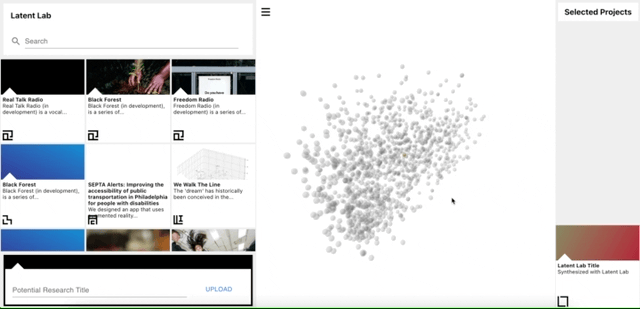
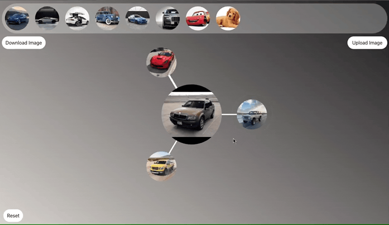

Container Space is technology studio of Trudy Painter.
Scroll ↓
Trudy is a senior at MIT double majoring in computer science and media
studies. She is also a researcher at the MIT Media Lab in the Viral
Communications Group under Andy Lippman.
She specializes in building web systems from scratch and developing
generative machine learning models.

Most recently, she developed a 3D interactive website to explore the
generative output space of a machine learning model trained on all the
research projects in the MIT Media Lab.

Also at the MIT Media Lab, she created a collaborative car
synthesizer. Multiple people can generate never-before seen cars
together.
She made a web server to track every song she listens to and
archives them at
trudy.tube.
She made a Google chrome extension for her friends to hang out in new
tabs.
For a DJ class, she made a web app to explore her Spotify library and
build tracklists for songs with compatible BPMs.
She made an alruistic climate change botnet. The botnet googles
climate change topics to artificially inflate web traffic around the
cause.
Right now, Trudy is most interested in creative AI tools, digital
archiving, and web browsers.
⬤ She is open to new work +
collaborations.
hello@container-space.co
Prior to the preeminence of sticks, swords and the Hero’s killing
tools, our ancestors’ greatest invention was the container: the
basket of wild oats, the medicine bundle, the net made of your own
hair, the home, the shrine, the place that contains whatever is
sacred. The recipient, the holder, the story. The bag of stars.
.gif)
 (1).gif)
.gif)
.gif)